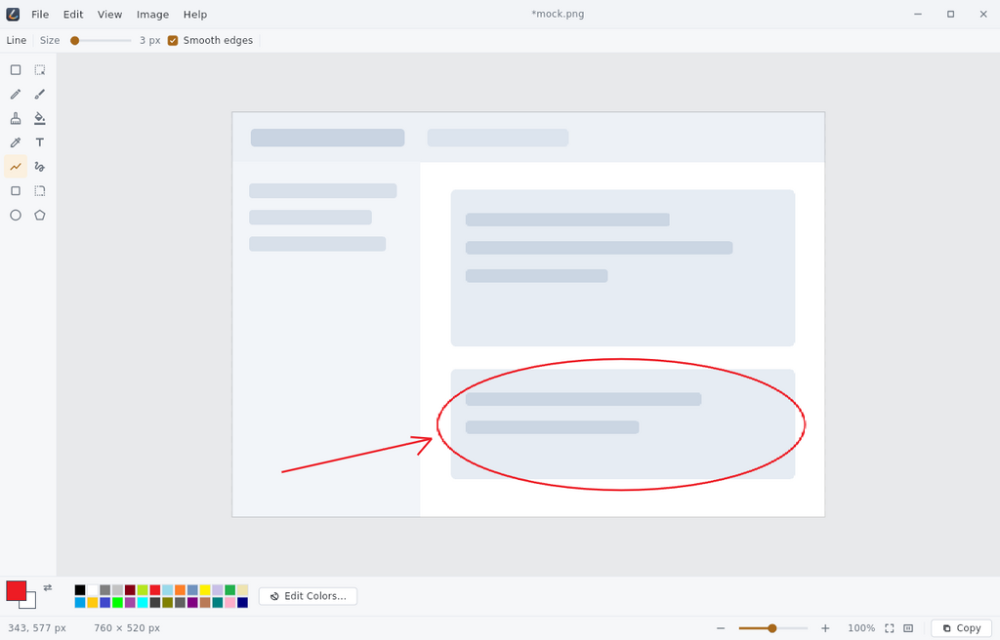

A simple, easy-to-use image editor for Linux. Open a picture, draw on it, save it, and get on with your day.

Adds the signed repository, so apt upgrade keeps
Paint current along with everything else on the machine.
sudo install -d -m 0755 /etc/apt/keyrings
curl -fsSL https://rbuache.github.io/paint/paint-archive-keyring.gpg \
| sudo tee /etc/apt/keyrings/paint.gpg > /dev/null
sudo curl -fsSL -o /etc/apt/sources.list.d/paint.sources \
https://rbuache.github.io/paint/paint.sources
sudo apt update
sudo apt install paintsudo apt update && sudo apt upgradeNo repository, and no automatic updates.
sudo apt install ./paint_0.1.0_amd64.debEverything happens locally: no accounts, no network, no telemetry. Built against glibc 2.35, so it runs on Ubuntu 22.04+, Debian 12+ and anything newer.